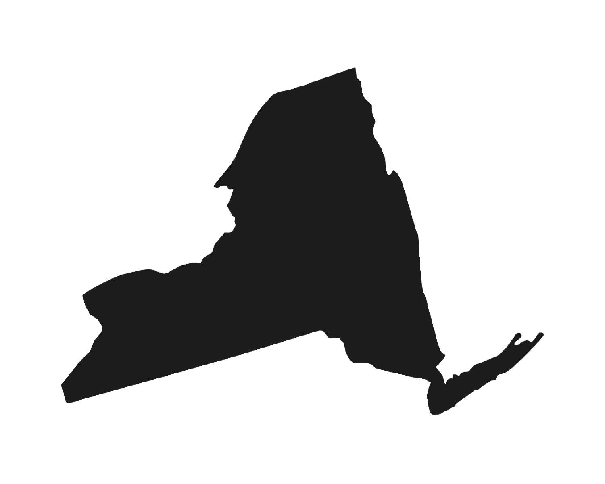
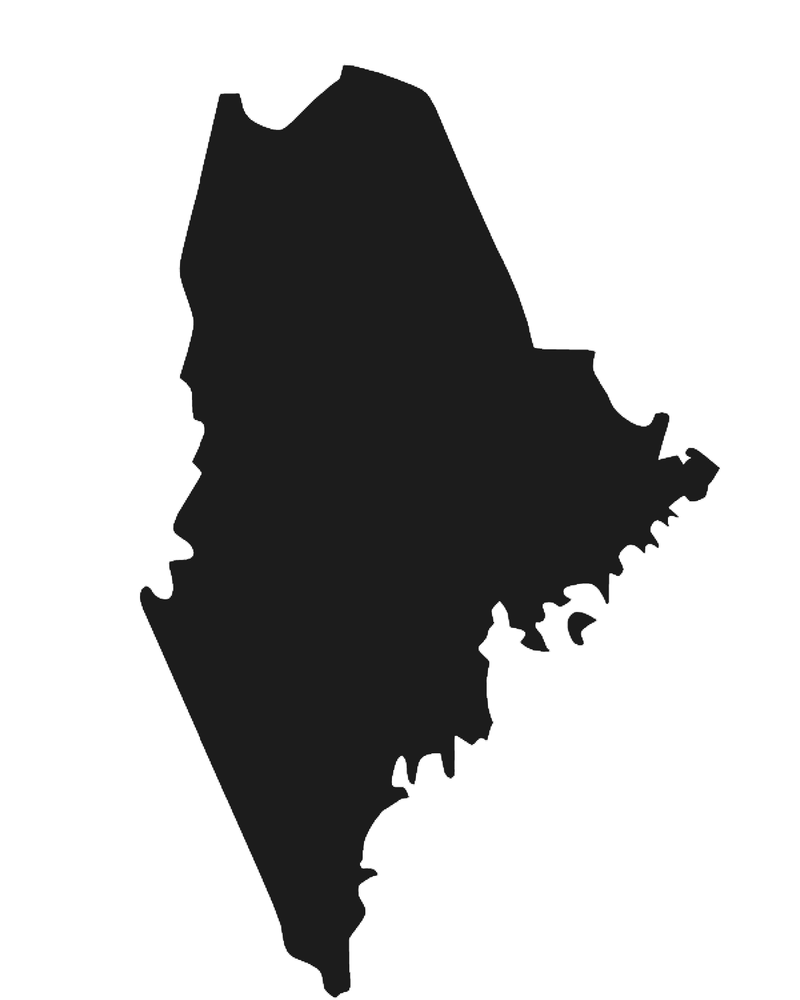

Home
About Us
Partners
Take Action
Partners
Choose your adventure


New York
Food Pantry/ AIDS Services / Summer Lunch Program
Volunteer in the Adirondaks!
Distribute produce and pantry items
Urban Farming
Help solve the Literacy Crisis
Homeward Bound Dog Rescue
Maine
Make Maine safer to bike!
Immigrant legal services
Fight Hunger
Help provide barrier-free services to empower people expiriencing homelessness
Local Sprouts
Musicians for environmental sustainability
New Hampshire
United Way
New Hampshire Habitat for Humanity
link to partner
New Hampshire SPCA
Rhode Island
Save the Bay! Work to clean up the Narragansett Bay
Homeless Services
Farm Fresh Rhode Island
Free Clinic for Uninsured, provides linguistically-appropriate, culturally-attuned medical care to uninsured adults
Immigrant and Refugee Services including Citizenship & Immigration and Education
Massachusetts
Mentor a small business owner!
Deliver meals to elders
Vetrans support
Greater Boston Food Bank
Friends of Boston Homeless
Cradles to Crayons
Animal Rescue League of Boston
Vermont
Volunteer in Burlington Parks or even as a sports coach!
Early literacy outreach
Volunteer in the arts!
Hospice
Lake Champlain Basin Program to clean Lake Champlain
Nature Conservancy
Spectrum Youth and Family Services